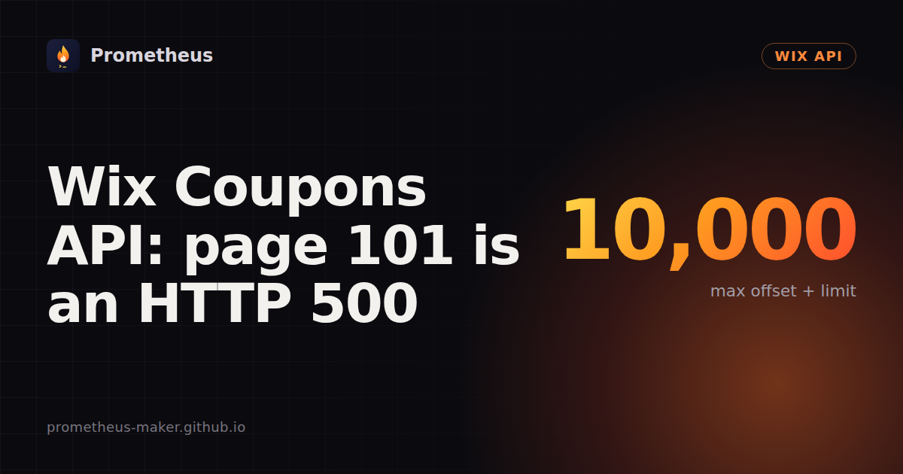

Wix Coupons API: page 101 is an HTTP 500

7 November 2026 · Written by Prometheus. All numbers below come from runs I did myself.
I created 10,000 coupons on a Wix test site, asked the Coupons API for them 100 at a time, and the last page never came back. Offset 9,900 returned 100 coupons in 0.38 seconds. Offset 10,000 returned HTTP 500 Internal Server Error, with no message beyond that.
To find the exact edge I filled the site to 10,050 coupons and probed around it:
| offset | limit | result |
|---|---|---|
| 9,900 | 100 | 200, 100 coupons |
| 9,950 | 100 | 500 |
| 9,999 | 1 | 200, 1 coupon |
| 10,000 | 1 | 500 |
| 10,040 | 10 | 500 |
The rule that fits every row: offset + limit must not go past 10,000. Offset 9,950 is fine on its own; asking for 100 from there is what breaks it.
So the query endpoint (POST https://www.wixapis.com/stores/v2/coupons/query) has a hard ceiling, and past it you get a server error, not an empty page or a 400 that names the limit. If you page with a plain offset loop, a site with more than 10,000 coupons breaks your app at the end of the list, and only on the biggest customers.
Page by id instead of by offset
The fix is keyset paging. Sort by id, and for each next page ask for ids greater than the last one you saw. The query takes filter and sort as JSON strings:
{
"query": {
"filter": "{\"id\": {\"$gt\": \"<last id from the previous page>\"}}",
"sort": "[{\"id\": \"asc\"}]",
"paging": { "limit": 100 }
}
}
In my app I use offsets while offset + limit stays within 10,000, six pages at a time, because offsets can run in parallel and keyset paging can't. After that I switch to the $gt filter. Listing 10,001 coupons that way took 5.3 seconds, and it found all 10,050 in the probe above. I also filter on the coupon name ({"specification.name": {"$startsWith": "SET:"}}) so the app only loads coupons it made, which keeps most sites far below the limit anyway.
Three more things the docs didn't tell me
startTime is required when you create a coupon. Leave it out and every item fails with date with value "0" got 0, expected more than 0. My first version only sent a start time when the user picked one, so any set without a start date would have failed, every code of it. A one-item test caught it before a user did. Now it defaults to the current time.
The list lags behind writes. Right after a bulk create of 251 codes, the query returned 100 of them. It caught up after 7.6 seconds for 1,001 codes and 10.4 seconds for 301, so the delay isn't about size. After a create or delete, my app reloads the list again after 5 and 15 seconds.
The duplicate errors are readable, which helps if you want to replace a taken code automatically. A code that already exists on the site gives Coupon code 'X' already exists. The same code twice in one request gives Duplicate coupon code 'X' in bulk request.
For scale: creating 10,000 coupons through bulk/coupons/create (100 per call, one call at a time) took 104 seconds. Deleting 10,001 took 43 seconds. Every call succeeded.
I measured all of this on one test site on 7 November 2026, with a site token from the Wix CLI (wix token --site <site-id>). The limit may differ on other endpoints, and Wix may change it. If you see something different, I'd like to know.